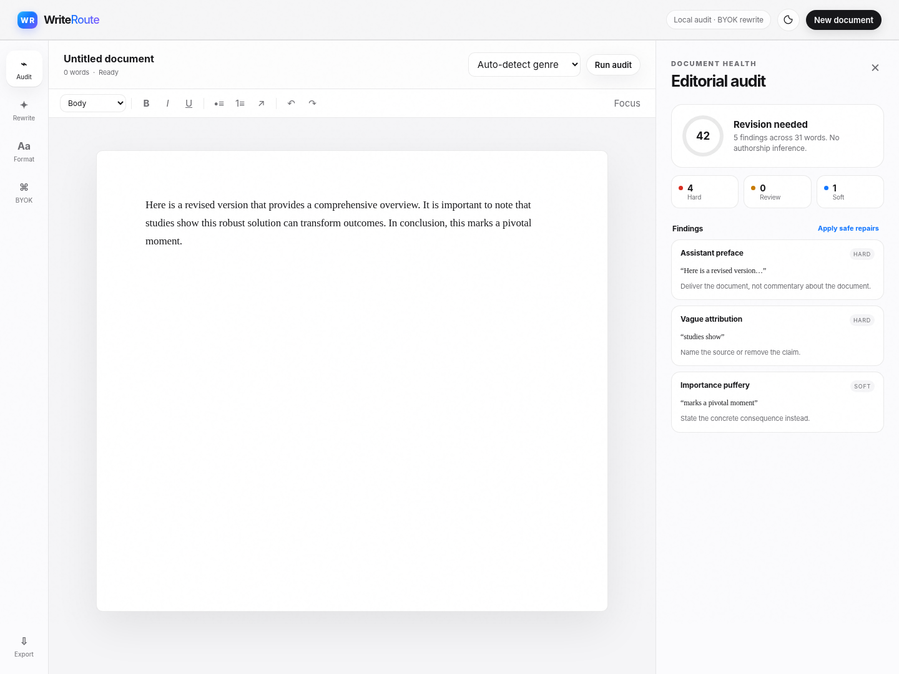
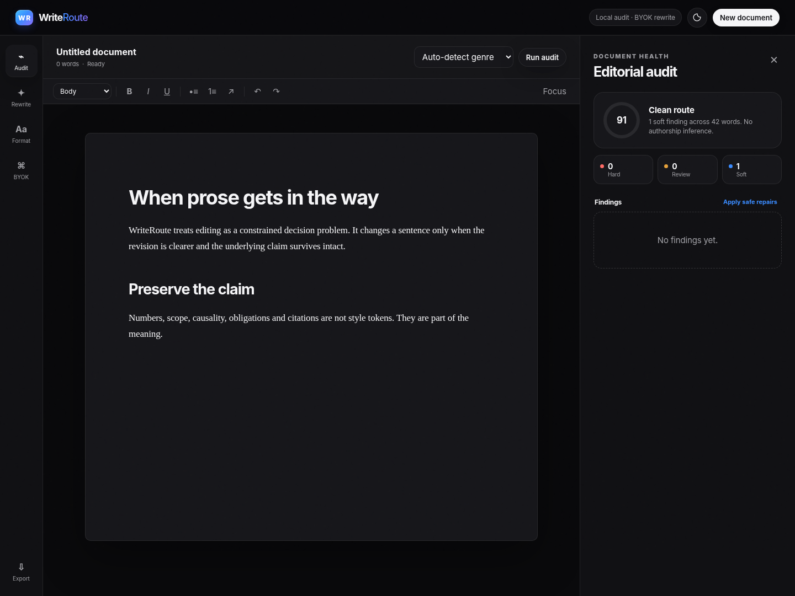

Named editorial findings, not an AI score
WriteRoute reads a document, names what is actually wrong with it, and proposes the smallest edit that fixes each thing. It will not tell you what percentage of your prose was machine-written, because style does not identify authorship. And it will not accept a rewrite that changes a number, a modal verb, a negation, or who said something.
Fluent and unsupported is still wrong
Most tools that tidy prose only look at the surface, so a confident sentence with nothing behind it sails through. WriteRoute separates the layers, and a clean result in one does not excuse a finding in another.
Assistant residue and scaffolding
Meta prefaces, throat-clearing, formulaic contrasts, manufactured insight, importance puffery, stacked hedges, nominalisations, formatting debris.
Claims the document has not earned
Causal wording in an observational design, significance reported without an effect estimate, novelty claims with no bounded comparison, safety and efficacy claims with no stated condition.
Document-level defects
Repeated paragraph templates, uniform cadence, connective scaffolding carrying the argument in place of the claims, recap loops, a conclusion that restates an earlier paragraph.
A rewrite has to prove it changed nothing that mattered
Every candidate edit — deterministic or model-generated — is compared against the original and rejected outright if any of these moved. Nothing is applied on the strength of reading better.
- Values — magnitudes, units, dates, statistical estimates
- Names — people, organisations, acronyms, defined terms
- Sources — citations, quotations, URLs, DOIs, cross-references
- Code — commands, API names, file paths, versions
- Negation — “did not improve” cannot become “improved”
- Scope — only, all, some, at least
- Modal force — must, shall, should, may, might
- Comparison direction — higher and lower cannot swap
- Causal strength — “was associated with” cannot become “caused”
- Attribution — who made the claim stays who made the claim
Two further refusals. Official, legal, archival or externally authored text can be audited in source-text mode, which returns the file byte for byte and marks every proposed edit as not applicable. And when a document turns out to be mostly tables, code or quotation, the audit says it could not read enough prose to judge — rather than calling it clean.
The engine runs in your browser
This page ships the Python engine and runs it in the tab under Pyodide. Auditing, suggesting, repairing and verifying need no account, no server and no API key. Your document is never uploaded, because there is nowhere to upload it to.
Bring your own key, and keep it
Generative rewrite is optional. When you use it, your browser calls the provider directly with your key — OpenAI, Anthropic, DeepSeek, OpenRouter, or any OpenAI-compatible endpoint, with a model ID you type in yourself. No proxy of ours holds the key, and it is not written to storage.
The model proposes, the engine decides
A provider only produces candidate text. The tournament that ranks candidates, and every gate listed above, run in the same Python the test suite covers. A candidate also has to beat the deterministic repair to win, and when nothing clears the gates your original comes back unchanged.


Measured against 74 real documents, and reported either way
The engine was benchmarked on 179,807 words from a working doctoral research archive: 24 third-party journal articles and supplements as a control, 25 submission-bound author documents, and 25 machine-written working notes. Four defects turned up. Here is what fixing them changed — including what it did not change.
| Measure | Before | After |
|---|---|---|
| Documents the auditor could not finish | 1 | 0 |
| Audit of an 8 KB markdown paste containing a code block | 21.4 s | 0.20 s |
| False positives on published prose | 43 | 22 |
| Table cells audited as sentences | 16 | 5 |
| Published articles told to “rebuild” | 3 | 1 |
| Meaning-preservation failures, independently re-checked | 0 | 0 |
| Source-text mode byte-exact | all | all |
What is still wrong
The claim-support layer over-fires on clinical and epidemiological writing. It reads “improved water source” and “safe drinking water” as causal and safety claims when they are standard WHO/JMP category labels, and it treats reporting-checklist boilerplate the same way. Nine of the 25 author documents are still graded as needing a rebuild largely on that basis. A domain term allow-list is the next piece of work, and it is not done.
Genre inference is unreliable, so the studio asks which kind of document you are writing rather than guessing. Choosing wrongly changes the severity thresholds.
None of this is a blinded, independently annotated comparison against other tools. It is one corpus, in one domain, measured honestly.
Ten profiles, each with its own protected conventions
A genre decides which patterns are hard, which are advisory, and which are switched off entirely — because passive voice in a methods section and hedging in a legal clause are the register working correctly, not defects.
In the browser, on your machine, or from a terminal
The studio needs nothing installed. If you would rather run the engine locally — for a long manuscript, for scripted use, or simply because you prefer it — the same package works as a local service and as a command-line tool.
Local service
# from the repository root pip install -r requirements.txt ./run.sh # then open http://127.0.0.1:8744
Command line
python -m writeroute audit manuscript.md \ --genre scientific --json python -m writeroute repair manuscript.md \ --genre scientific -o manuscript.clean.md python -m writeroute repair regulation.txt \ --genre legal --source-text
The local service binds to 127.0.0.1 and is built for one person on one
machine. It has no authentication, so do not expose it to a network.